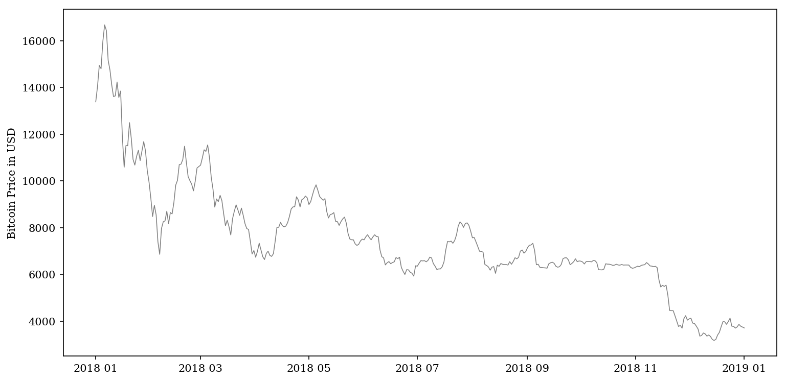

import warnings import itertools import numpy as np import pandas as pd from sklearn import tree from sklearn.svm import SVC import matplotlib.pyplot as plt from xgboost import XGBClassifier import matplotlib.ticker as ticker from sklearn.decomposition import PCA from imblearn.over_sampling import SMOTE from sklearn.metrics import confusion_matrix from multiprocessing import set_start_method from sklearn.tree import DecisionTreeClassifier from IPython.display import display, HTML, Image from sklearn.neural_network import MLPClassifier from sklearn.preprocessing import StandardScaler from sklearn.neighbors import KNeighborsClassifier from sklearn.linear_model import LogisticRegression from sklearn.model_selection import KFold, GridSearchCV from pandas.plotting import register_matplotlib_converters from sklearn.discriminant_analysis import LinearDiscriminantAnalysis from sklearn.ensemble import RandomForestClassifier, AdaBoostClassifier, GradientBoostingClassifier
I got the preliminary bitcoin data from bitcoincharts. Data include price and volume information recorded by Bitstamp and split by seconds. This provide great granularity that can be grouped into any desirable levels later on.
We first resample our data by hour. Since most Bitcoin exchanges nowadays have transaction fees, which renders retail trading at a high frequency level unattainable. Therefore I leave out the second and minute level data and combine them into hours. Note that I average the price while summing the volume within an hour.
A 2 year data window from 2017 to 2019 is used, as this is when Bitcoin and other crypto has come into the attention of the larger public, and mostly importantly, started to be heavily traded. Therefore the training set will be more representative of any future trading environment. The plot below illustrates the total dollar amount traded per hours over time.
1 2 3 4
df0 = data.resample('H').agg({'price': np.mean, 'volume': np.sum}).fillna(method='ffill') plt.plot(df0.volume * df0.price, c='black') plt.title('Bitcoin Dollar Volume in Dollar Term') plt.show()
plt.plot(df.price, c='black') plt.title('Bitcoin Price 2017-07-01 to 2019-06-30') plt.show()
We then created several more data fields intending to extract more information from the previous n-hour window
1 2 3 4 5 6 7 8 9 10 11
interval = [6, 12, 24, 48, 120] # 0.25, 0.5, 1, 2, 5 days for i in interval: for c in ['price', 'volume']: df[c+'_change_'+str(i)+'H'] = df[c]/df[c].shift(i)-1 df[c+'_high_'+str(i)+'H'] = df[c].rolling(i).max().shift(1) / df[c] df[c+'_low_'+str(i)+'H'] = df[c].rolling(i).min().shift(1) / df[c] df[c+'_avg_'+str(i)+'H'] = df[c].rolling(i).mean().shift(1) / df[c] df[c+'_std_'+str(i)+'H'] = df[c].rolling(i).std().shift(1) / df[c] * np.sqrt(24/i)
df.dropna(inplace=True) disp(df.head())
price
volume
tr
price_change_6H
price_high_6H
price_low_6H
price_avg_6H
price_std_6H
volume_change_6H
volume_high_6H
volume_low_6H
volume_avg_6H
volume_std_6H
price_change_12H
price_high_12H
price_low_12H
price_avg_12H
price_std_12H
volume_change_12H
volume_high_12H
volume_low_12H
volume_avg_12H
volume_std_12H
price_change_24H
price_high_24H
price_low_24H
price_avg_24H
price_std_24H
volume_change_24H
volume_high_24H
volume_low_24H
volume_avg_24H
volume_std_24H
price_change_48H
price_high_48H
price_low_48H
price_avg_48H
price_std_48H
volume_change_48H
volume_high_48H
volume_low_48H
volume_avg_48H
volume_std_48H
price_change_120H
price_high_120H
price_low_120H
price_avg_120H
price_std_120H
volume_change_120H
volume_high_120H
volume_low_120H
volume_avg_120H
volume_std_120H
time
2017-07-06 00:00:00
2607.823311
233.619901
0.0102
0.005149
1.001294
0.994877
0.998116
0.005057
-0.539692
2.172459
1.271991
1.710225
0.606196
0.019447
1.001294
0.980924
0.991722
0.010182
-0.137448
2.604881
0.986408
1.724699
0.659083
0.012479
1.001294
0.973805
0.985347
0.008630
-0.708220
3.444264
0.815879
1.940980
0.748083
0.019561
1.008966
0.973805
0.990540
0.006865
0.552344
4.357035
0.644187
1.832178
0.620839
0.054336
1.008966
0.916032
0.966001
0.011353
0.163482
8.713623
0.498690
1.772706
0.491582
2017-07-06 01:00:00
2592.974565
229.561261
0.0102
-0.005044
1.007028
1.001879
1.004691
0.004088
-0.415935
1.872772
1.017680
1.541597
0.657009
0.011195
1.007028
0.988929
0.999000
0.009511
-0.622775
2.650935
1.003848
1.741677
0.698711
0.011259
1.007028
0.979381
0.991506
0.009179
-0.707043
3.505159
0.830303
1.872374
0.713401
0.009083
1.014744
0.979381
0.996615
0.006895
0.168152
4.434067
0.830303
1.872115
0.625493
0.052367
1.014744
0.921278
0.971965
0.011479
0.003091
8.867680
0.507507
1.805239
0.499861
2017-07-06 02:00:00
2595.240970
111.498601
0.0102
-0.005029
1.006148
0.999127
1.002969
0.005542
-0.624789
3.855797
2.058871
2.929583
1.561810
0.009963
1.006148
0.989687
0.999049
0.008379
-0.765640
4.551893
2.058871
3.302634
1.296594
0.016319
1.006148
0.978526
0.991104
0.009312
-0.861432
7.216670
1.709488
3.647934
1.347291
0.000808
1.013858
0.978526
0.995932
0.006872
-0.870219
9.129174
1.709488
3.860618
1.283035
0.063050
1.013858
0.920474
0.971530
0.011491
-0.765300
18.257410
1.044891
3.716808
1.029132
2017-07-06 03:00:00
2601.939179
154.465403
0.0102
0.001575
1.003558
0.996555
0.999547
0.005543
-0.640708
2.783251
0.721835
1.914348
1.612821
0.013029
1.003558
0.987139
0.997297
0.007360
-0.329707
3.285718
0.721835
2.187443
1.098140
0.017659
1.003558
0.976007
0.989220
0.009328
-0.719538
4.131480
0.721835
2.446232
0.882973
-0.004151
1.011248
0.976007
0.993385
0.006859
-0.848249
6.589761
0.721835
2.685895
0.903309
0.062422
1.011248
0.918104
0.969522
0.011449
-0.131612
13.178846
0.721835
2.663309
0.746976
2017-07-06 04:00:00
2594.198903
323.934946
0.0102
-0.006510
1.006553
0.999528
1.002792
0.005453
-0.093037
1.273228
0.344201
0.771118
0.713993
0.006701
1.006553
0.993343
1.001348
0.005868
-0.345152
1.566764
0.344201
1.023516
0.558260
0.021535
1.006553
0.978919
0.992897
0.009496
-0.492401
1.970058
0.344201
1.115490
0.427613
-0.005803
1.014265
0.978919
0.996261
0.006822
0.102404
2.598252
0.344201
1.225214
0.392388
0.057479
1.014265
0.920843
0.972906
0.011490
1.679001
6.284212
0.344201
1.269372
0.356447
PCA
Due to the large number of features created in the last step, we use PCA to reduce the dimensionality of the data. Aside from price, 15 other principal components are retained. Since we mostly care about predicting accuracy, therefore we are okay with losing some interpretability in the PCA process.
df_pca = pd.DataFrame(X_pca, index=df.index, columns = ['PC' + str(i) for i in range(1, comp+1)]) df = pd.DataFrame(df.iloc[:, 0:3]).join(df_pca) disp(df.head())
price
volume
tr
PC1
PC2
PC3
PC4
PC5
PC6
PC7
PC8
PC9
PC10
PC11
PC12
PC13
PC14
PC15
time
2017-07-06 00:00:00
2607.823311
233.619901
0.0102
1.204847
-1.442388
-0.936078
0.562964
-1.802252
-0.126177
-2.115852
0.258446
0.547159
-0.005956
-0.345683
-0.077257
-0.389290
-0.253596
0.501094
2017-07-06 01:00:00
2592.974565
229.561261
0.0102
1.072486
-0.509851
-1.208146
1.100969
-1.991122
0.106322
-1.995090
0.089313
0.690748
-0.003055
-0.152291
-0.266696
-0.403753
-0.415290
0.602009
2017-07-06 02:00:00
2595.240970
111.498601
0.0102
6.313332
0.286169
-0.274636
1.772318
-3.465762
0.816421
-5.245687
0.737407
1.652572
0.043234
0.118171
-0.658779
-0.606447
-0.557087
0.499793
2017-07-06 03:00:00
2601.939179
154.465403
0.0102
1.986983
-0.820551
-1.195466
0.697308
-1.574198
0.289253
-1.100313
0.593288
0.655685
-0.005791
-0.018679
-0.152047
-0.354950
-0.493463
0.640942
2017-07-06 04:00:00
2594.198903
323.934946
0.0102
-1.350755
-0.873287
-1.805126
0.663435
-0.972641
0.036059
-0.009574
0.000981
0.200082
0.315963
-0.225084
-0.120908
-0.308701
-0.390018
0.597231
Modeling
Train and test sets are created for modeling purpose. Since it is time series data, randomization will not be performed. Rather, both train and test sets are chosen such that they both include a market upturn and market downturn.
1 2
train = df.loc['2017-07-01':'2018-06-30'] test = df.loc['2018-07-01':'2019-06-30']
Here we specify some modeling parameters. The trading frequency is set to one day.
Create a model engine that fit the train data and use grid search CV to tune the parameter grid. A long trade will be executed only if the model predict a next-5-day up move in the last 24 consecutive hours. This limits the frequency of trade which reduce the impact of the relatively large transaction fee per trade. The training threshold is set to 75 bps, which means the model is train to identify a potential up move of more than 75 bps in the next 5 days.
# run model if search: model = GridSearchCV(estimator=Model(**param_init), cv=KFold(n_splits=5, random_state=0), scoring='precision', param_grid=param_grid).fit(X_train, Y_train) print(f'cv precision: {round(model.best_score_, 2)}, best param: {model.best_params_}') else: model = Model(**param).fit(X_train, Y_train)
Plotting the cumulative return for each strategy with transaction fee reflected.
1 2 3 4 5 6
plt.plot(result) plt.legend(result.columns, frameon=False) plt.xticks(rotation=30) plt.gca().xaxis.set_major_locator(ticker.MultipleLocator(30)) plt.ylabel('Cumulative Value Based on $1000 Investment') plt.show()
In this research I studied on the performance of simple and exponential moving average crossover strategies, with window sizes chosen by optimizing in-sample PNL, sharpe ratio and 30-day maximum drawdown. The calibrated strategy performs well, earning 500% cumulative return compared to baseline and a sharpe ratio of 1.30. The the 30-day maximum drawdown is similar to the baseline.
Strategy
P&L
Sharpe Ratio
Maximum Drawdown
0
Baseline
0.28
-1.48
0.35
1
MA
1.54
1.30
0.37
2
EWMA
1.45
1.10
0.38
Motivation
It is no secret that price manipulations have always plagued the rising crypto-market. In this [paper], the auther studies large transactions behind the tether coin, and showed more evidence supporting that each large move in the crypto-market usually only come from the act of only a few. In this type of regime, I argue that technical indicator may be a better bet to profit compared to any attempt to apply fundamental analysis, because an increase in price no longer comes from the increase in a crypto’s intrinsic value, but rather speculation and manipulation. In this exercise I will mainly focus on moving average crossover techniques and its optimization.
Packages
1 2 3 4 5 6 7 8 9 10 11 12 13 14 15 16 17 18
import itertools from IPython.display import display, HTML, Image import matplotlib.pyplot as plt import matplotlib.ticker as ticker import numpy as np import pandas as pd from pandas.plotting import register_matplotlib_converters import warnings
I got the preliminary bitcoin data from bitcoincharts. Data include price and volume information recorded by Bitstamp and split by seconds. This provide great granularity that can be grouped into any desirable levels later on.
Data are grouped in to daily, with average applied to price and sum applied to trade volume. The backtest period is selected to be from 2018 to 2019, where the market was in continuous downturn. This ensure that our strategy performs well in adverse scenarios.
plt.plot(df.price, c='tab:grey') plt.ylabel('Bitcoin Price in USD') plt.show()

Simple Moving Average
A simple moving average strategy use the cross-over point of two moving averages as the trading signal. Here we use grid-search to find out the window size pair that optimizes our desired metrics, namely P&L, Sharpe ratio and 30-day maximum drawdown.
Performing grid-search for the optimal window size pair. Note that 25bps of transaction fee is added, this is to reflect the typical fee charged by crypto exchanges. I used coinbase pro’s fee here as an example.
Starting 08-01-2019, I have implemented the optimal MA strategy on a VPS (virtual private server), running 24/7 through the coinbase pro api. Will post update on this periodically.
In this research, we dive into the bitcoin perpetual swap contract on the BitMEX exchange. Specifically, we are interested at the predicting power of its funding structure and the subsequent applications to algorithmic trading.
Traditionally, future provides additional liquidity and leverage to market participants. With USD, one may either buy Bitcoin, or Bitcoin futures which provide x more gain potentials. However, every future contract has an expiry date and can be traded at significantly spread. The first Bitcoin future in the U.S. was traded on Dec 10, 2017 on the Cboe Futures Exchange.
The Bitcoin perpetual swap contract, on the contrast, does not have an expiry date thus removing the need to rollover. It trades much closer to the underlying Bitcoin price via a funding mechanism. On BitMEX, the swap holders must exchange fundings every hours between the long and short counter-parties. This create price pressure for the swap price to converge to the actual Bitcoin price.
For example, if swap price Bitcoin price, then the funding would be positive and therefore the long positions will need to pay funding to its short counter-parties. This creates pressures for the swap price to decrease and move towards the Bitcoin price.
Strategy
The funding creates a great monetary incentive if you are holding the contract on the right side and we would like to see if we can capture the funding gain overtime with an algorithmic trading strategy. Since the funding is announced hours before the actual exchange happens, we have an hour window of entry after knowing that a profitable funding will occur. After we enter the contract and collect the funding, we then have another hour window for exiting (this assumes we only want to enter contract at any given time). We will try to look for optimal enter/exit time combinations and evaluate performances.
This is similar to the mean reversion strategy discussed by BitMEX’s founder Arthur Hayes in his blog[1][2]. We are carrying this strategy further, analyzing enter and exit options at more granular level and proposing a more optimal execution strategy.
Dependency
1 2 3 4 5 6 7 8 9 10 11 12 13
import pytz import time import datetime import requests import numpy as np import pandas as pd from random import random import statsmodels.api as sm import matplotlib.pyplot as plt from IPython.display import display, HTML, Image from sklearn.linear_model import LinearRegression from pandas.plotting import register_matplotlib_converters register_matplotlib_converters()
# swap return by holding from funding time -30m to +1m df['swapRet'] = df.swapPrice.shift(-300) / df.swapPrice.shift(30) - 1 df.dropna(inplace=True) disp(df)
plt.title("Swap Price vs Funding Rate") plt.show()
Analysis
Regress the funding rates to the swap return at different enter/exit time. Here we are trying to look for statistically significant (ideally, negative) correlation between the two. Since a negative correlation would imply additional gain from price change on top of the funding profit. We only consider entering a contract if the funding is outside twice of its 60-day historical rolling standard deviations.
1 2 3 4 5 6 7 8 9 10 11 12 13 14 15 16 17 18 19
deffilter_on_rolling_std(df, window, sigma_band, t1, t2, run_reg=False, show_summary=False, show_coef=True): df_sigma = df.copy() df_sigma['sigma'] = df_sigma.fundingRate.rolling(window).std() df_sigma = df_sigma.fillna(method = 'ffill').dropna() df_sigma = df_sigma.loc[(df_sigma.fundingRate > sigma_band * df_sigma.sigma) | (df_sigma.fundingRate < -sigma_band * df_sigma.sigma)] if run_reg: y = np.array(df_sigma['swapRet']) X = np.array(df_sigma[['fundingRate']]) X = sm.add_constant(X) model = sm.OLS(y,X).fit()
coef = model.params[1].round(4) pval = model.pvalues[0].round(4) if show_summary: print(model.summary()) if show_coef: print('enter', t1, 'exit', t2, 'coef', coef, 'pval', pval)
Here we observe that as exit time becomes longer, the coefficient becomes more negative and p-value of the coefficient indicates higher significance. Thus we would want to hold the swap position more than 360 minutes/6 hours. Next we look at the impact from entry time.
Similar trends are observed in the entry times and that earlier the entry, the more profit it seems to imply from price changes. We show a summary of the regression at enter time minutes and exit time minutes. There is a moderate R-square of 0.039 and high significance in coefficient which suggest a mean reversion in price given that specific time window.
Warnings: [1] Standard Errors assume that the covariance matrix of the errors is correctly specified.
Strategy
Based on the research above, this strategy will enter into a swap agreement to collect funding at and exit at . At , if the next funding does not fall outside of the 2-sigma band AND if we are in a position to collect the next funding, we will test two choices of
holding for more and exit after colllecting the funding
exiting
We will test the impact of a 10bps fee + slippage on each trade.
We can see that this strategy does provide substantial P&L from the historical periods tested with relatively limited capital exposure. Fees would impact the gains slightly, and using an optimize approach would further improve the performance.